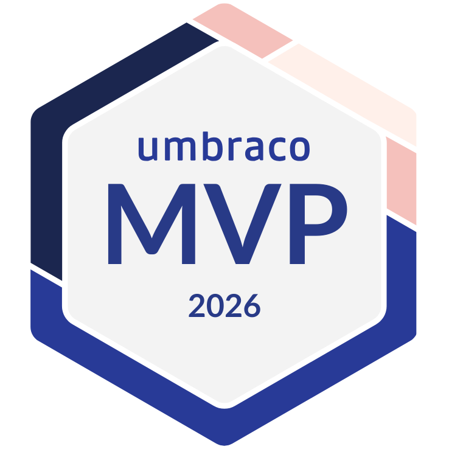

Improve your product's developer experience
Templates, tooling and backoffice extensions that make your Umbraco product easier to build on.
Warren Buckley, a freelance Umbraco developer and contractor and nine-time Umbraco MVP, making Umbraco better for the developers who build with it.
9× Umbraco MVP
Clients and projects include

Hire
Templates, tooling and backoffice extensions that make your Umbraco product easier to build on.
An experienced Umbraco contractor who can join your team and contribute from the first week.
Freelance Umbraco development to finish builds, upgrades and integrations that have stalled.
Help your team, agency or organisation build its presence in the Umbraco community.
Client work
Client work
Drove the migration of the Council's Umbraco site from version 13 to 16, and brought the in-house team up to speed on the new backoffice technology.
He played a fundamental role in the success of the project, not only by driving the migration itself but also by bringing our team up to speed with the new UI technology introduced in v16.
Open source
Stops Umbraco editors overwriting each other by locking a node while someone works on it.
A cross-platform desktop app for reading and querying the JSON log files that Serilog writes.
A Visual Studio Code extension that runs the open folder as a website with IIS Express.
Recommendations
Warren is an absolute pleasure to work with. Ever professional, great with clients, solutions focussed and an incomparable knowledge of Umbraco!
I would 100% recommend Warren to anyone looking for a trusted pair of hands on large and complex Umbraco builds.
Warren worked with Manifesto as a contractor on a large and complex Umbraco project, and his experience was invaluable throughout.
He brought strong technical knowledge, helped steer the team through some challenging areas, and was a calm and trusted presence with the client.
Blog
How to switch package features on and off at runtime, without a deployment, by pairing IOptionsMonitor with a SignalR hub and a Bellissima global context.
A FormValidateNotification handler that uses a regular expression to reject HTML submitted to Umbraco Forms fields.